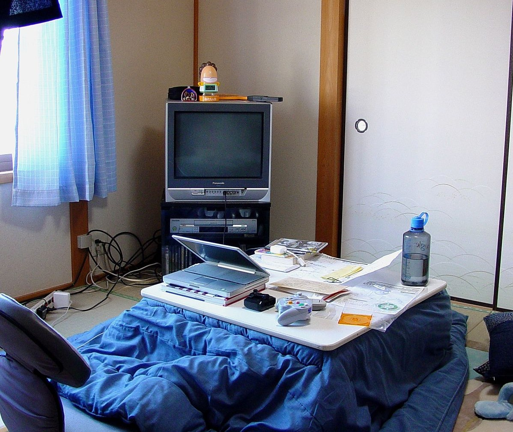
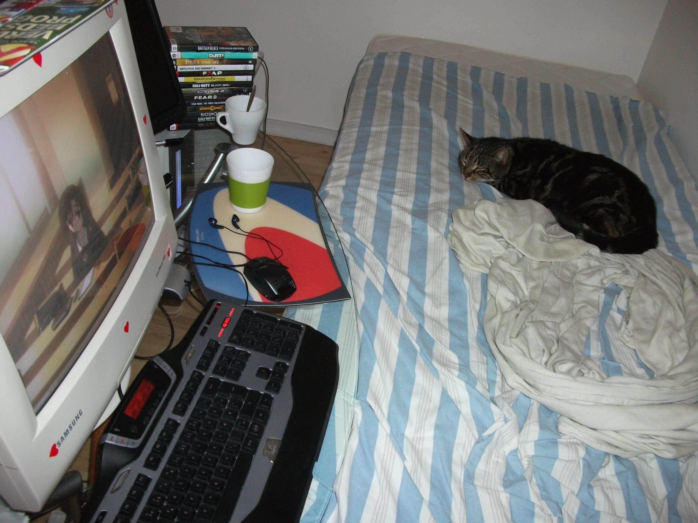

2013 and 2014
Posted on July 27, 2023 23:18 PMIt's been like 10 years, and surely time flies. I used to play some games on my PC like GTA, Minecraft, and RTS video games back then after coming home from school. Days like these are days I will never forget. Life was really simple at that time.

Back then, the Playstation 2 console was still considered a classic, even though there were already many Playstation 3 rentals available. My friends in school couldn't stop talking about how much fun they had with Playstation 2 games. Although back then i wasn't interested to an video game console. but i enjoy listening and talking about video games console with them.
One game that left a lasting impression on me was GTA V. Many peoples talking about this game. this game quite popular back then on a Playstation 3 rental console. I remember playing it in 2014 or 2015 on a Playstation 3 rental console. It was a marvelous game, with complex upgrades from GTA San Andreas. The graphics and the story were truly astounding.
It's hard to imagine how I first played it on a rental console when I was in elementary school, and even until I was in college, this game still didn't get a sequel.
I had a friend back in the day who was really passionate about assassin's creed games and would visit console rental stores every week to play them. Although I wasn't really into console games at the time, But i accepted his offer to accompany him.
He actually was the first friend who introduced me to the world of video games, not just any games, but also introduced me to an famous youtuber at that time, and it was a PewDiePie. This dude was quite humorous, and I always laughed when he played horror video games in 2013. Sadly, his content have been changes drastically over the past 10 years. Even though his content about vlog in Japan was really great. I love it.

Another aspect of pop culture that I remember is anime. Sword Art Online or Attack On Titan were the most popular anime in 2013. but I wasn't interested in anime in that time. Even though Naruto was really popular back then. However, in late 2020 I started to watching anime continuously.
I watch anime accidentally when I saw my brother watching Sword Art Online in 2012, and I ended up watching it with him. The Sword Art Online anime opening still gives me great memories and nostalgic vibes every time I watch it.
Aside from memories of video games and anime, I like to compare the social realm from back then and now. There have been significant differences over the past 10 years. What has changed between those times and now? Honestly, I am miss all of that.